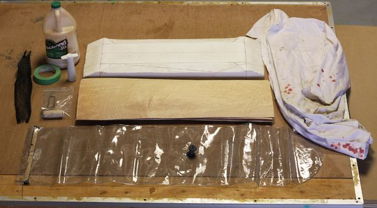

Skateboard Laminating
The project we carried out throughout Rotation 7 was making a skateboard deck.
The first part of the skateboard was the lamination of the various wood sheets with Titebond III glue.

This part was challenging but we managed to carry out everything at a good speed.
Skateboard Vacuum-Bag
The next step to make the dech was vacuum forming the glued sheets, we had just about 7 minutes to complete step 1 and 2.


The vacuum bag has a breather to get the air out of the whole bag, and it was closed with a strip of tar to seal everything.
Skateboard SPAR Urethane Coating
The last step to have a new shiny and durable skateboard deck was to put a couple coatings of SPAR Urethane,
a varnish that protects the vinyl and the wood.


Skateboard End Result
This project consisted in engraving a Glass using the rotary atachment of the laser cutter
as shown below. The cghallenge was that the height and width dimensions were confusing.